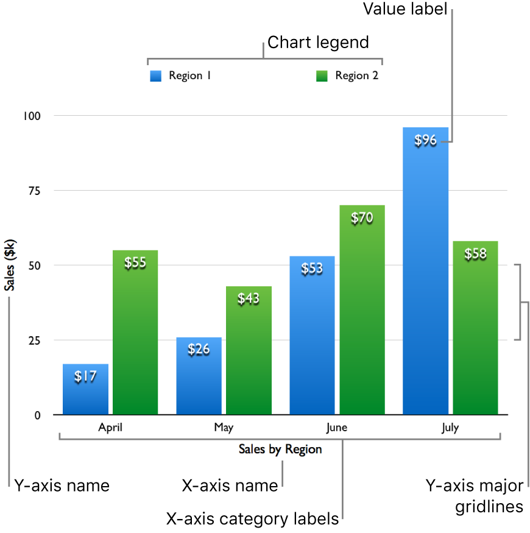

Date and Location of the Attack:
The attack occurred on the evening of Friday, November 13, 2015, in multiple locations across Paris, France.
Among the targeted places were the terrace of a restaurant, the Bataclan concert hall, and the Stade de France.
Execution of the Attack:
The attacks were coordinated and carried out by multiple terrorists. They opened fire in the aforementioned public
places and detonated explosive devices. In total, there were multiple simultaneous attacks.
Casualty Count:
The Paris terrorist attack resulted in the deaths of over 130 people and the injury of hundreds more.
The victims included both French citizens and foreign nationals who were in the city at the time.
International Response:
The Paris terrorist attack elicited strong condemnation from the international community. Numerous countries and leaders
from around the world expressed solidarity and support for France in the aftermath of this tragic event.
Investigation and Accountability:
French authorities conducted a comprehensive investigation to identify and apprehend those responsible for the attack.
The terrorist group Islamic State (ISIS) claimed responsibility for the Paris attack.
13 November 2016
Date and Location of the Attack:
The attack occurred on the evening of Friday, November 13, 2016, in multiple locations across Paris, France.
Among the targeted places were the terrace of a restaurant, the Bataclan concert hall, and the Stade de France.
Execution of the Attack:
The attacks were coordinated and carried out by multiple terrorists. They opened fire in the aforementioned public
places and detonated explosive devices. In total, there were multiple simultaneous attacks.
Casualty Count:
The Paris terrorist attack resulted in the deaths of over 130 people and the injury of hundreds more.
The victims included both French citizens and foreign nationals who were in the city at the time.
International Response:
The Paris terrorist attack elicited strong condemnation from the international community. Numerous countries and leaders
from around the world expressed solidarity and support for France in the aftermath of this tragic event.
Investigation and Accountability:
French authorities conducted a comprehensive investigation to identify and apprehend those responsible for the attack.
The terrorist group Islamic State (ISIS) claimed responsibility for the Paris attack.
Attacks in every region

If you want to explore other periods of time or locations you can go to: